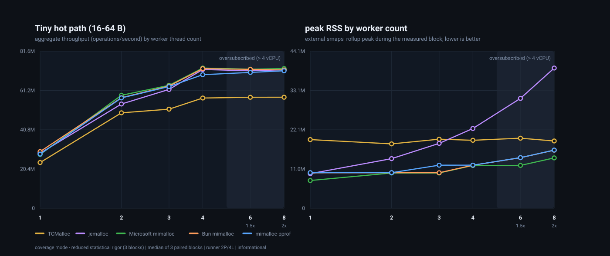
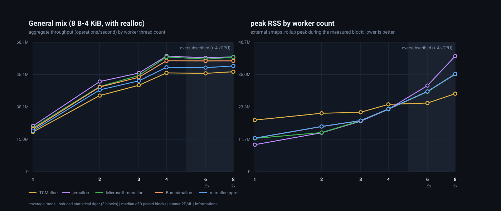
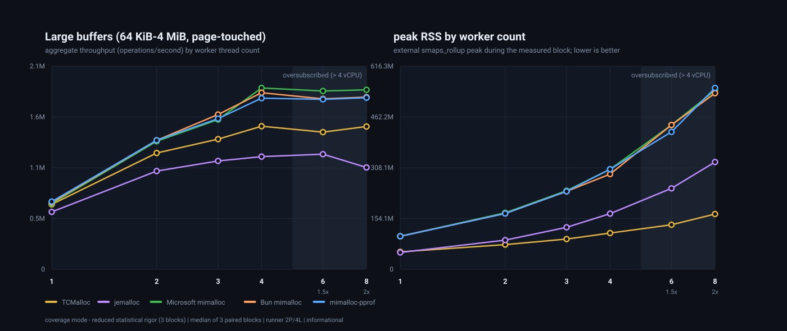
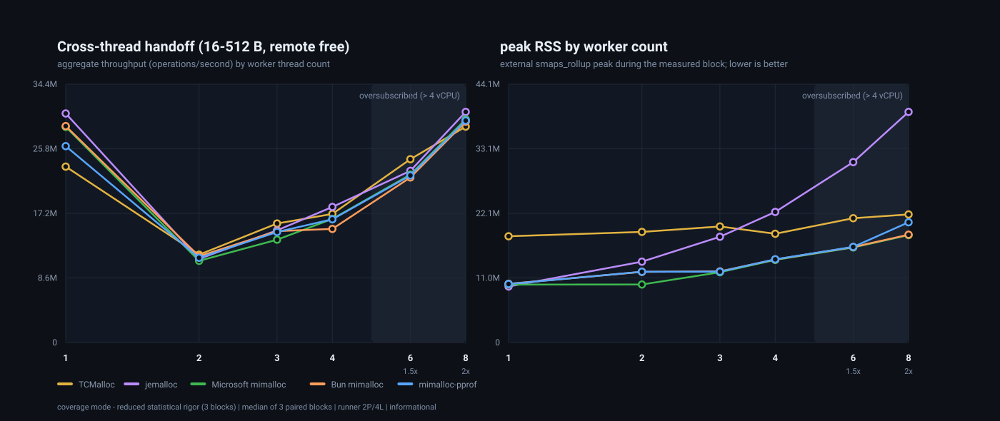

latency: pending
pending - metric protocol not implemented
Phase issueSuite core-throughput-v1; source 1cba5cfe807d60f9b147a1bcc68c22f77acecc9c; runner github-hosted. Intervals are informational.
| Scenario | Threads | Allocator | Median | Noisy |
|---|---|---|---|---|
| tiny-fixed-16 | 1 | tcmalloc | 5922585.859547181 | no |
| tiny-fixed-16 | 1 | jemalloc | 6993427.851033649 | no |
| tiny-fixed-16 | 1 | upstream-mimalloc | 7000241.847431298 | no |
| tiny-fixed-16 | 1 | bun-mimalloc | 7000053.308206685 | no |
| tiny-fixed-16 | 1 | mimalloc-pprof | 6214946.433892958 | no |
| tiny-fixed-16 | physical-core | tcmalloc | 4769901.353242761 | no |
| tiny-fixed-16 | physical-core | jemalloc | 11357726.885186873 | no |
| tiny-fixed-16 | physical-core | upstream-mimalloc | 10662106.498019116 | no |
| tiny-fixed-16 | physical-core | bun-mimalloc | 10891075.380658656 | no |
| tiny-fixed-16 | physical-core | mimalloc-pprof | 9306979.252925185 | no |
| tiny-fixed-64 | 1 | tcmalloc | 2456661.638155589 | no |
| tiny-fixed-64 | 1 | jemalloc | 2597632.568750409 | no |
| tiny-fixed-64 | 1 | upstream-mimalloc | 2609391.366726793 | no |
| tiny-fixed-64 | 1 | bun-mimalloc | 2605553.3206786243 | no |
| tiny-fixed-64 | 1 | mimalloc-pprof | 2457161.984398701 | no |
| tiny-fixed-64 | physical-core | tcmalloc | 4077944.434594587 | no |
| tiny-fixed-64 | physical-core | jemalloc | 4778944.5719103515 | no |
| tiny-fixed-64 | physical-core | upstream-mimalloc | 4602030.423261954 | no |
| tiny-fixed-64 | physical-core | bun-mimalloc | 4630240.424428444 | no |
| tiny-fixed-64 | physical-core | mimalloc-pprof | 4269167.500397643 | no |
| small-log-mixed | 1 | tcmalloc | 3033656.272682044 | yes |
| small-log-mixed | 1 | jemalloc | 3221670.72428349 | yes |
| small-log-mixed | 1 | upstream-mimalloc | 3273140.58130738 | yes |
| small-log-mixed | 1 | bun-mimalloc | 3269239.7915320927 | yes |
| small-log-mixed | 1 | mimalloc-pprof | 2973254.3613822716 | yes |
| small-log-mixed | physical-core | tcmalloc | 4615694.255312434 | yes |
| small-log-mixed | physical-core | jemalloc | 5631163.618220952 | yes |
| small-log-mixed | physical-core | upstream-mimalloc | 5461709.884163679 | yes |
| small-log-mixed | physical-core | bun-mimalloc | 5525381.1973720435 | yes |
| small-log-mixed | physical-core | mimalloc-pprof | 5075826.333980434 | yes |
| small-log-mixed | 2x-logical | tcmalloc | 5446577.3315717 | yes |
| small-log-mixed | 2x-logical | jemalloc | 6014223.485606804 | yes |
| small-log-mixed | 2x-logical | upstream-mimalloc | 5792050.561796257 | yes |
| small-log-mixed | 2x-logical | bun-mimalloc | 5780683.138039394 | yes |
| small-log-mixed | 2x-logical | mimalloc-pprof | 5320977.204427482 | yes |
| medium-log-mixed | 1 | tcmalloc | 13310.146208519567 | yes |
| medium-log-mixed | 1 | jemalloc | 13164.591264692908 | yes |
| medium-log-mixed | 1 | upstream-mimalloc | 13263.78093064223 | yes |
| medium-log-mixed | 1 | bun-mimalloc | 13322.654414459079 | yes |
| medium-log-mixed | 1 | mimalloc-pprof | 13343.633495193839 | yes |
| medium-log-mixed | physical-core | tcmalloc | 21966.274640198397 | no |
| medium-log-mixed | physical-core | jemalloc | 21800.746720271105 | no |
| medium-log-mixed | physical-core | upstream-mimalloc | 21987.329699668633 | no |
| medium-log-mixed | physical-core | bun-mimalloc | 22082.72269928967 | no |
| medium-log-mixed | physical-core | mimalloc-pprof | 21989.588206909557 | no |
| large-objects | 1 | tcmalloc | 3237.8769465876953 | yes |
| large-objects | 1 | jemalloc | 2627.3654600943105 | yes |
| large-objects | 1 | upstream-mimalloc | 3223.0289297619493 | yes |
| large-objects | 1 | bun-mimalloc | 3220.849967941711 | yes |
| large-objects | 1 | mimalloc-pprof | 3214.417704254102 | yes |
| large-objects | 2 | tcmalloc | 5189.7306132344265 | no |
| large-objects | 2 | jemalloc | 4089.0303643714406 | yes |
| large-objects | 2 | upstream-mimalloc | 5405.685313692562 | yes |
| large-objects | 2 | bun-mimalloc | 5435.008624577465 | yes |
| large-objects | 2 | mimalloc-pprof | 5395.775916823514 | yes |
| batch-lifo | 1 | tcmalloc | 45741.48554183035 | no |
| batch-lifo | 1 | jemalloc | 46171.30773387083 | no |
| batch-lifo | 1 | upstream-mimalloc | 46321.677933671235 | no |
| batch-lifo | 1 | bun-mimalloc | 46190.43419337087 | no |
| batch-lifo | 1 | mimalloc-pprof | 45312.60994409467 | no |
| batch-lifo | physical-core | tcmalloc | 89094.8828953501 | no |
| batch-lifo | physical-core | jemalloc | 91407.58009991146 | no |
| batch-lifo | physical-core | upstream-mimalloc | 90362.10951711102 | no |
| batch-lifo | physical-core | bun-mimalloc | 90606.57537874034 | no |
| batch-lifo | physical-core | mimalloc-pprof | 88342.78779101762 | no |
| batch-fifo | 1 | tcmalloc | 45790.55470398089 | no |
| batch-fifo | 1 | jemalloc | 46271.46133117504 | no |
| batch-fifo | 1 | upstream-mimalloc | 46415.58309724343 | no |
| batch-fifo | 1 | bun-mimalloc | 46111.317143325294 | no |
| batch-fifo | 1 | mimalloc-pprof | 45260.074142365476 | no |
| batch-fifo | physical-core | tcmalloc | 89059.84078144148 | no |
| batch-fifo | physical-core | jemalloc | 91453.62625344648 | no |
| batch-fifo | physical-core | upstream-mimalloc | 90453.46855004503 | no |
| batch-fifo | physical-core | bun-mimalloc | 89729.10592796194 | no |
| batch-fifo | physical-core | mimalloc-pprof | 88365.77165426794 | no |
| cross-thread-producer-consumer | 2 | tcmalloc | 75413.77758016271 | no |
| cross-thread-producer-consumer | 2 | jemalloc | 74238.63078843363 | no |
| cross-thread-producer-consumer | 2 | upstream-mimalloc | 75181.60613400745 | no |
| cross-thread-producer-consumer | 2 | bun-mimalloc | 75600.07448537057 | no |
| cross-thread-producer-consumer | 2 | mimalloc-pprof | 74864.68672835061 | no |
| cross-thread-producer-consumer | physical-core | tcmalloc | 74387.25625943992 | no |
| cross-thread-producer-consumer | physical-core | jemalloc | 75866.64927041144 | no |
| cross-thread-producer-consumer | physical-core | upstream-mimalloc | 74697.46213616777 | no |
| cross-thread-producer-consumer | physical-core | bun-mimalloc | 73597.76823544441 | no |
| cross-thread-producer-consumer | physical-core | mimalloc-pprof | 76108.19653586963 | no |
| random-ownership | physical-core | tcmalloc | 74093.4314942802 | no |
| random-ownership | physical-core | jemalloc | 74762.76759261666 | no |
| random-ownership | physical-core | upstream-mimalloc | 74426.81795300334 | no |
| random-ownership | physical-core | bun-mimalloc | 74250.58526213835 | no |
| random-ownership | physical-core | mimalloc-pprof | 74122.0806133623 | no |
| realloc-geometric | 1 | tcmalloc | 75347.04305831956 | yes |
| realloc-geometric | 1 | jemalloc | 74897.5945164849 | yes |
| realloc-geometric | 1 | upstream-mimalloc | 76025.56763411916 | yes |
| realloc-geometric | 1 | bun-mimalloc | 75373.48842434539 | yes |
| realloc-geometric | 1 | mimalloc-pprof | 75058.92416455223 | yes |
| realloc-geometric | physical-core | tcmalloc | 130956.32645560829 | yes |
| realloc-geometric | physical-core | jemalloc | 134679.2382556394 | yes |
| realloc-geometric | physical-core | upstream-mimalloc | 133228.08560618083 | yes |
| realloc-geometric | physical-core | bun-mimalloc | 134248.04644648646 | yes |
| realloc-geometric | physical-core | mimalloc-pprof | 132880.95339951705 | yes |
| calloc-zero | 1 | tcmalloc | 459987.6428958859 | yes |
| calloc-zero | 1 | jemalloc | 458153.0287688856 | yes |
| calloc-zero | 1 | upstream-mimalloc | 464016.3901370575 | yes |
| calloc-zero | 1 | bun-mimalloc | 461265.97065628954 | yes |
| calloc-zero | 1 | mimalloc-pprof | 458185.85502543475 | yes |
| calloc-zero | physical-core | tcmalloc | 710991.8239253187 | yes |
| calloc-zero | physical-core | jemalloc | 741327.4627825258 | yes |
| calloc-zero | physical-core | upstream-mimalloc | 729476.8660901648 | yes |
| calloc-zero | physical-core | bun-mimalloc | 733996.9878553575 | yes |
| calloc-zero | physical-core | mimalloc-pprof | 724931.193314195 | yes |
| aligned-range | 1 | tcmalloc | 163686.99894393724 | yes |
| aligned-range | 1 | jemalloc | 163280.4347034072 | yes |
| aligned-range | 1 | upstream-mimalloc | 162928.03821462585 | yes |
| aligned-range | 1 | bun-mimalloc | 163453.22873168447 | yes |
| aligned-range | 1 | mimalloc-pprof | 162646.87521388725 | yes |
| aligned-range | physical-core | tcmalloc | 256364.08479631032 | yes |
| aligned-range | physical-core | jemalloc | 258148.53757914188 | yes |
| aligned-range | physical-core | upstream-mimalloc | 258523.16205696636 | yes |
| aligned-range | physical-core | bun-mimalloc | 258446.5133668096 | yes |
| aligned-range | physical-core | mimalloc-pprof | 256778.71583530068 | yes |
| sawtooth-retain-drain | 1 | tcmalloc | 1000.3356998825218 | no |
| sawtooth-retain-drain | 1 | jemalloc | 984.5024772480234 | no |
| sawtooth-retain-drain | 1 | upstream-mimalloc | 1000.9934893780335 | no |
| sawtooth-retain-drain | 1 | bun-mimalloc | 1001.3948657238502 | no |
| sawtooth-retain-drain | 1 | mimalloc-pprof | 995.531084686559 | no |
| sawtooth-retain-drain | physical-core | tcmalloc | 1943.026796180385 | no |
| sawtooth-retain-drain | physical-core | jemalloc | 1941.5393033815676 | no |
| sawtooth-retain-drain | physical-core | upstream-mimalloc | 1933.7229783831287 | no |
| sawtooth-retain-drain | physical-core | bun-mimalloc | 1950.176156168466 | no |
| sawtooth-retain-drain | physical-core | mimalloc-pprof | 1941.0575329315375 | no |
| thread-churn | 1 | tcmalloc | 17455.60314108766 | no |
| thread-churn | 1 | jemalloc | 11662.71374109104 | no |
| thread-churn | 1 | upstream-mimalloc | 15873.472027618142 | no |
| thread-churn | 1 | bun-mimalloc | 15935.460157930904 | no |
| thread-churn | 1 | mimalloc-pprof | 15586.978041516131 | no |
| thread-churn | physical-core | tcmalloc | 21023.777563352327 | no |
| thread-churn | physical-core | jemalloc | 14689.062158135583 | no |
| thread-churn | physical-core | upstream-mimalloc | 18483.57507002604 | no |
| thread-churn | physical-core | bun-mimalloc | 18550.617870044716 | no |
| thread-churn | physical-core | mimalloc-pprof | 18165.78723971695 | no |
| representative-mix | 1 | tcmalloc | 51793.03135380244 | yes |
| representative-mix | 1 | jemalloc | 51807.505410045356 | yes |
| representative-mix | 1 | upstream-mimalloc | 51863.50533659855 | yes |
| representative-mix | 1 | bun-mimalloc | 51372.35404636534 | yes |
| representative-mix | 1 | mimalloc-pprof | 51793.82333036846 | yes |
| representative-mix | physical-core | tcmalloc | 75642.98416830116 | yes |
| representative-mix | physical-core | jemalloc | 75364.62847829652 | yes |
| representative-mix | physical-core | upstream-mimalloc | 75327.69449562587 | yes |
| representative-mix | physical-core | bun-mimalloc | 74638.41169440886 | yes |
| representative-mix | physical-core | mimalloc-pprof | 74573.03919840345 | yes |
Externally sampled from /proc/<pid>/smaps_rollup every 5000000 ns with VmHWM cross-checks and natural purge only. The bar chart normalizes sampled peak RSS to upstream-mimalloc = 1.0 (matching the throughput panel), with absolute MiB in the table below. The Pareto scatter pairs each allocator's fragmentation proxy with its median throughput on the matching scenario/thread cell; upper-left is better. The timeline shows RSS growth, the workload-drained marker, and the 100 ms / 1 s / 5 s post-drain points so return-to-OS behavior is visible. The fragmentation proxy is reported only where the live set is the measured quantity; thread-churn reads n/a by design, and any cell whose peak RSS never rose above its baseline records no ratio rather than a fabricated one. Runner: github-hosted; results are informational. Memory run 31937843446/1; metric key 1468306e3d8599b3565faf026ea961ad2ff1b0dbf604441f06661889dfa11731.
| Scenario | Threads | Metric | Allocator | Median (MiB or ratio) | vs upstream |
|---|---|---|---|---|---|
| large-objects | 1 | sampled-peak-rss-bytes | tcmalloc | 35.707 | 1.52x |
| large-objects | 1 | sampled-peak-rss-bytes | jemalloc | 35.238 | 1.50x |
| large-objects | 1 | sampled-peak-rss-bytes | upstream-mimalloc | 23.434 | 1.00x |
| large-objects | 1 | sampled-peak-rss-bytes | mimalloc-pprof | 23.453 | 1.00x |
| large-objects | 1 | post-drain-rss-100ms-bytes | tcmalloc | 35.691 | - |
| large-objects | 1 | post-drain-rss-100ms-bytes | jemalloc | 11.227 | - |
| large-objects | 1 | post-drain-rss-100ms-bytes | upstream-mimalloc | 23.434 | - |
| large-objects | 1 | post-drain-rss-100ms-bytes | mimalloc-pprof | 23.453 | - |
| large-objects | 1 | post-drain-rss-1s-bytes | tcmalloc | 35.691 | - |
| large-objects | 1 | post-drain-rss-1s-bytes | jemalloc | 11.227 | - |
| large-objects | 1 | post-drain-rss-1s-bytes | upstream-mimalloc | 23.434 | - |
| large-objects | 1 | post-drain-rss-1s-bytes | mimalloc-pprof | 23.453 | - |
| large-objects | 1 | post-drain-rss-5s-bytes | tcmalloc | 35.691 | - |
| large-objects | 1 | post-drain-rss-5s-bytes | jemalloc | 11.227 | - |
| large-objects | 1 | post-drain-rss-5s-bytes | upstream-mimalloc | 23.434 | - |
| large-objects | 1 | post-drain-rss-5s-bytes | mimalloc-pprof | 23.453 | - |
| large-objects | 1 | fragmentation-proxy | tcmalloc | 1.1681184787564947 | - |
| large-objects | 1 | fragmentation-proxy | jemalloc | 1.93798828125 | - |
| large-objects | 1 | fragmentation-proxy | upstream-mimalloc | 0.8726819022933912 | - |
| large-objects | 1 | fragmentation-proxy | mimalloc-pprof | 0.782470703125 | - |
| large-objects | 2 | sampled-peak-rss-bytes | tcmalloc | 65.328 | 1.03x |
| large-objects | 2 | sampled-peak-rss-bytes | jemalloc | 64.246 | 1.01x |
| large-objects | 2 | sampled-peak-rss-bytes | upstream-mimalloc | 63.504 | 1.00x |
| large-objects | 2 | sampled-peak-rss-bytes | mimalloc-pprof | 65.457 | 1.03x |
| large-objects | 2 | post-drain-rss-100ms-bytes | tcmalloc | 49.328 | - |
| large-objects | 2 | post-drain-rss-100ms-bytes | jemalloc | 14.957 | - |
| large-objects | 2 | post-drain-rss-100ms-bytes | upstream-mimalloc | 63.504 | - |
| large-objects | 2 | post-drain-rss-100ms-bytes | mimalloc-pprof | 65.457 | - |
| large-objects | 2 | post-drain-rss-1s-bytes | tcmalloc | 49.328 | - |
| large-objects | 2 | post-drain-rss-1s-bytes | jemalloc | 14.957 | - |
| large-objects | 2 | post-drain-rss-1s-bytes | upstream-mimalloc | 63.504 | - |
| large-objects | 2 | post-drain-rss-1s-bytes | mimalloc-pprof | 65.457 | - |
| large-objects | 2 | post-drain-rss-5s-bytes | tcmalloc | 49.328 | - |
| large-objects | 2 | post-drain-rss-5s-bytes | jemalloc | 15.605 | - |
| large-objects | 2 | post-drain-rss-5s-bytes | upstream-mimalloc | 63.504 | - |
| large-objects | 2 | post-drain-rss-5s-bytes | mimalloc-pprof | 65.457 | - |
| large-objects | 2 | fragmentation-proxy | tcmalloc | 1.47412109375 | - |
| large-objects | 2 | fragmentation-proxy | jemalloc | 1.7601364311127514 | - |
| large-objects | 2 | fragmentation-proxy | upstream-mimalloc | 1.7037353515625 | - |
| large-objects | 2 | fragmentation-proxy | mimalloc-pprof | 1.7037353515625 | - |
| sawtooth-retain-drain | 1 | sampled-peak-rss-bytes | tcmalloc | 18.754 | 1.40x |
| sawtooth-retain-drain | 1 | sampled-peak-rss-bytes | jemalloc | 9.266 | 0.69x |
| sawtooth-retain-drain | 1 | sampled-peak-rss-bytes | upstream-mimalloc | 13.434 | 1.00x |
| sawtooth-retain-drain | 1 | sampled-peak-rss-bytes | mimalloc-pprof | 13.453 | 1.00x |
| sawtooth-retain-drain | 1 | post-drain-rss-100ms-bytes | tcmalloc | 18.754 | - |
| sawtooth-retain-drain | 1 | post-drain-rss-100ms-bytes | jemalloc | 8.285 | - |
| sawtooth-retain-drain | 1 | post-drain-rss-100ms-bytes | upstream-mimalloc | 13.312 | - |
| sawtooth-retain-drain | 1 | post-drain-rss-100ms-bytes | mimalloc-pprof | 13.137 | - |
| sawtooth-retain-drain | 1 | post-drain-rss-1s-bytes | tcmalloc | 18.754 | - |
| sawtooth-retain-drain | 1 | post-drain-rss-1s-bytes | jemalloc | 8.285 | - |
| sawtooth-retain-drain | 1 | post-drain-rss-1s-bytes | upstream-mimalloc | 13.312 | - |
| sawtooth-retain-drain | 1 | post-drain-rss-1s-bytes | mimalloc-pprof | 13.137 | - |
| sawtooth-retain-drain | 1 | post-drain-rss-5s-bytes | tcmalloc | 18.754 | - |
| sawtooth-retain-drain | 1 | post-drain-rss-5s-bytes | jemalloc | 8.285 | - |
| sawtooth-retain-drain | 1 | post-drain-rss-5s-bytes | upstream-mimalloc | 13.312 | - |
| sawtooth-retain-drain | 1 | post-drain-rss-5s-bytes | mimalloc-pprof | 13.137 | - |
| sawtooth-retain-drain | 1 | fragmentation-proxy | tcmalloc | 10.716312930715782 | - |
| sawtooth-retain-drain | 1 | fragmentation-proxy | jemalloc | 1.439381515754949 | - |
| sawtooth-retain-drain | 1 | fragmentation-proxy | upstream-mimalloc | 8.922841698632732 | - |
| sawtooth-retain-drain | 1 | fragmentation-proxy | mimalloc-pprof | 8.970786883684866 | - |
| sawtooth-retain-drain | physical-core | sampled-peak-rss-bytes | tcmalloc | 18.68 | 0.96x |
| sawtooth-retain-drain | physical-core | sampled-peak-rss-bytes | jemalloc | 13.254 | 0.68x |
| sawtooth-retain-drain | physical-core | sampled-peak-rss-bytes | upstream-mimalloc | 19.441 | 1.00x |
| sawtooth-retain-drain | physical-core | sampled-peak-rss-bytes | mimalloc-pprof | 19.465 | 1.00x |
| sawtooth-retain-drain | physical-core | post-drain-rss-100ms-bytes | tcmalloc | 18.68 | - |
| sawtooth-retain-drain | physical-core | post-drain-rss-100ms-bytes | jemalloc | 11.309 | - |
| sawtooth-retain-drain | physical-core | post-drain-rss-100ms-bytes | upstream-mimalloc | 13.316 | - |
| sawtooth-retain-drain | physical-core | post-drain-rss-100ms-bytes | mimalloc-pprof | 14.836 | - |
| sawtooth-retain-drain | physical-core | post-drain-rss-1s-bytes | tcmalloc | 18.68 | - |
| sawtooth-retain-drain | physical-core | post-drain-rss-1s-bytes | jemalloc | 11.309 | - |
| sawtooth-retain-drain | physical-core | post-drain-rss-1s-bytes | upstream-mimalloc | 13.316 | - |
| sawtooth-retain-drain | physical-core | post-drain-rss-1s-bytes | mimalloc-pprof | 14.836 | - |
| sawtooth-retain-drain | physical-core | post-drain-rss-5s-bytes | tcmalloc | 18.68 | - |
| sawtooth-retain-drain | physical-core | post-drain-rss-5s-bytes | jemalloc | 11.328 | - |
| sawtooth-retain-drain | physical-core | post-drain-rss-5s-bytes | upstream-mimalloc | 13.316 | - |
| sawtooth-retain-drain | physical-core | post-drain-rss-5s-bytes | mimalloc-pprof | 14.836 | - |
| sawtooth-retain-drain | physical-core | fragmentation-proxy | tcmalloc | 5.419650904494531 | - |
| sawtooth-retain-drain | physical-core | fragmentation-proxy | jemalloc | 1.360864821977586 | - |
| sawtooth-retain-drain | physical-core | fragmentation-proxy | upstream-mimalloc | 10.715987728290807 | - |
| sawtooth-retain-drain | physical-core | fragmentation-proxy | mimalloc-pprof | 11.279517789837067 | - |
| small-log-mixed | physical-core | sampled-peak-rss-bytes | tcmalloc | 18.426 | 1.95x |
| small-log-mixed | physical-core | sampled-peak-rss-bytes | jemalloc | 13.281 | 1.41x |
| small-log-mixed | physical-core | sampled-peak-rss-bytes | upstream-mimalloc | 9.441 | 1.00x |
| small-log-mixed | physical-core | sampled-peak-rss-bytes | mimalloc-pprof | 9.461 | 1.00x |
| small-log-mixed | physical-core | post-drain-rss-100ms-bytes | tcmalloc | 18.426 | - |
| small-log-mixed | physical-core | post-drain-rss-100ms-bytes | jemalloc | 13.141 | - |
| small-log-mixed | physical-core | post-drain-rss-100ms-bytes | upstream-mimalloc | 9.379 | - |
| small-log-mixed | physical-core | post-drain-rss-100ms-bytes | mimalloc-pprof | 9.398 | - |
| small-log-mixed | physical-core | post-drain-rss-1s-bytes | tcmalloc | 18.426 | - |
| small-log-mixed | physical-core | post-drain-rss-1s-bytes | jemalloc | 13.141 | - |
| small-log-mixed | physical-core | post-drain-rss-1s-bytes | upstream-mimalloc | 9.379 | - |
| small-log-mixed | physical-core | post-drain-rss-1s-bytes | mimalloc-pprof | 9.398 | - |
| small-log-mixed | physical-core | post-drain-rss-5s-bytes | tcmalloc | 18.426 | - |
| small-log-mixed | physical-core | post-drain-rss-5s-bytes | jemalloc | 13.141 | - |
| small-log-mixed | physical-core | post-drain-rss-5s-bytes | upstream-mimalloc | 9.379 | - |
| small-log-mixed | physical-core | post-drain-rss-5s-bytes | mimalloc-pprof | 9.398 | - |
| small-log-mixed | physical-core | fragmentation-proxy | tcmalloc | 5773.879518072289 | - |
| small-log-mixed | physical-core | fragmentation-proxy | jemalloc | 108.98447893569845 | - |
| small-log-mixed | physical-core | fragmentation-proxy | upstream-mimalloc | 4540.144578313253 | - |
| small-log-mixed | physical-core | fragmentation-proxy | mimalloc-pprof | 1198.8292682926829 | - |
| cross-thread-producer-consumer | physical-core | sampled-peak-rss-bytes | tcmalloc | 18.0 | 1.91x |
| cross-thread-producer-consumer | physical-core | sampled-peak-rss-bytes | jemalloc | 13.266 | 1.41x |
| cross-thread-producer-consumer | physical-core | sampled-peak-rss-bytes | upstream-mimalloc | 9.441 | 1.00x |
| cross-thread-producer-consumer | physical-core | sampled-peak-rss-bytes | mimalloc-pprof | 9.461 | 1.00x |
| cross-thread-producer-consumer | physical-core | post-drain-rss-100ms-bytes | tcmalloc | 18.0 | - |
| cross-thread-producer-consumer | physical-core | post-drain-rss-100ms-bytes | jemalloc | 13.133 | - |
| cross-thread-producer-consumer | physical-core | post-drain-rss-100ms-bytes | upstream-mimalloc | 8.941 | - |
| cross-thread-producer-consumer | physical-core | post-drain-rss-100ms-bytes | mimalloc-pprof | 9.023 | - |
| cross-thread-producer-consumer | physical-core | post-drain-rss-1s-bytes | tcmalloc | 18.0 | - |
| cross-thread-producer-consumer | physical-core | post-drain-rss-1s-bytes | jemalloc | 13.133 | - |
| cross-thread-producer-consumer | physical-core | post-drain-rss-1s-bytes | upstream-mimalloc | 8.941 | - |
| cross-thread-producer-consumer | physical-core | post-drain-rss-1s-bytes | mimalloc-pprof | 9.023 | - |
| cross-thread-producer-consumer | physical-core | post-drain-rss-5s-bytes | tcmalloc | 18.0 | - |
| cross-thread-producer-consumer | physical-core | post-drain-rss-5s-bytes | jemalloc | 13.133 | - |
| cross-thread-producer-consumer | physical-core | post-drain-rss-5s-bytes | upstream-mimalloc | 8.988 | - |
| cross-thread-producer-consumer | physical-core | post-drain-rss-5s-bytes | mimalloc-pprof | 9.023 | - |
| cross-thread-producer-consumer | physical-core | fragmentation-proxy | tcmalloc | 7347.975757575758 | - |
| cross-thread-producer-consumer | physical-core | fragmentation-proxy | jemalloc | 143.71929824561403 | - |
| cross-thread-producer-consumer | physical-core | fragmentation-proxy | upstream-mimalloc | 4501.40614334471 | - |
| cross-thread-producer-consumer | physical-core | fragmentation-proxy | mimalloc-pprof | 1883.8745644599303 | - |
| thread-churn | physical-core | sampled-peak-rss-bytes | tcmalloc | 18.395 | 1.95x |
| thread-churn | physical-core | sampled-peak-rss-bytes | jemalloc | 13.203 | 1.40x |
| thread-churn | physical-core | sampled-peak-rss-bytes | upstream-mimalloc | 9.441 | 1.00x |
| thread-churn | physical-core | sampled-peak-rss-bytes | mimalloc-pprof | 11.465 | 1.21x |
| thread-churn | physical-core | post-drain-rss-100ms-bytes | tcmalloc | 18.395 | - |
| thread-churn | physical-core | post-drain-rss-100ms-bytes | jemalloc | 13.141 | - |
| thread-churn | physical-core | post-drain-rss-100ms-bytes | upstream-mimalloc | 9.441 | - |
| thread-churn | physical-core | post-drain-rss-100ms-bytes | mimalloc-pprof | 11.465 | - |
| thread-churn | physical-core | post-drain-rss-1s-bytes | tcmalloc | 18.395 | - |
| thread-churn | physical-core | post-drain-rss-1s-bytes | jemalloc | 13.141 | - |
| thread-churn | physical-core | post-drain-rss-1s-bytes | upstream-mimalloc | 9.441 | - |
| thread-churn | physical-core | post-drain-rss-1s-bytes | mimalloc-pprof | 11.465 | - |
| thread-churn | physical-core | post-drain-rss-5s-bytes | tcmalloc | 18.395 | - |
| thread-churn | physical-core | post-drain-rss-5s-bytes | jemalloc | 13.141 | - |
| thread-churn | physical-core | post-drain-rss-5s-bytes | upstream-mimalloc | 9.441 | - |
| thread-churn | physical-core | post-drain-rss-5s-bytes | mimalloc-pprof | 11.465 | - |
| thread-churn | physical-core | fragmentation-proxy | tcmalloc | 3252.0 | - |
| thread-churn | physical-core | fragmentation-proxy | jemalloc | 3994.7680608365017 | - |
| thread-churn | physical-core | fragmentation-proxy | upstream-mimalloc | 521.3809064609451 | - |
| thread-churn | physical-core | fragmentation-proxy | mimalloc-pprof | 2576.0 | - |
| thread-churn | physical-core | fragmentation-proxy | - | n/a | not applicable to this scenario |
| Scenario | Candidate | Effect | 95% interval | Interpretation |
|---|---|---|---|---|
| tiny-fixed-16 | tcmalloc | 0.8457019276447495 | 0.8435757793310377–0.8515360254299111 | informational |
| tiny-fixed-16 | jemalloc | 0.9987938493455948 | 0.9968689602479274–1.0033126999582405 | informational |
| tiny-fixed-16 | bun-mimalloc | 0.9998894119975346 | 0.9976661446535902–1.002502608806222 | informational |
| tiny-fixed-16 | mimalloc-pprof | 0.8872902607378701 | 0.884829885484103–0.8898321549655502 | informational |
| tiny-fixed-16 | tcmalloc | 0.44806016848511765 | 0.44343344098694676–0.45238064428796504 | informational |
| tiny-fixed-16 | jemalloc | 1.0667397685521527 | 1.0596705618748061–1.0695640640376545 | informational |
| tiny-fixed-16 | bun-mimalloc | 1.0190373815816103 | 1.01404330284287–1.0237390842414404 | informational |
| tiny-fixed-16 | mimalloc-pprof | 0.8726958225708681 | 0.8650942268570628–0.8797431978606204 | informational |
| tiny-fixed-64 | tcmalloc | 0.9413770971317346 | 0.9409085212623152–0.9425993739034293 | informational |
| tiny-fixed-64 | jemalloc | 0.9958320890530787 | 0.9932367678532295–0.9964607190136751 | informational |
| tiny-fixed-64 | bun-mimalloc | 0.9985952220181813 | 0.9973939544909607–1.0041515842989905 | informational |
| tiny-fixed-64 | mimalloc-pprof | 0.9418436634397189 | 0.9398959637173048–0.9445329704864144 | informational |
| tiny-fixed-64 | tcmalloc | 0.8869029779189104 | 0.8822843831097901–0.8899137043341404 | informational |
| tiny-fixed-64 | jemalloc | 1.036396265683542 | 1.0312744651819001–1.0387538992541774 | informational |
| tiny-fixed-64 | bun-mimalloc | 1.009777631635749 | 1.0010086453710967–1.010388530729914 | informational |
| tiny-fixed-64 | mimalloc-pprof | 0.9270381700922604 | 0.9255805367633541–0.9294742792951695 | informational |
| small-log-mixed | tcmalloc | 0.9306327855640156 | 0.9100121407765368–0.9423737887496623 | informational |
| small-log-mixed | jemalloc | 0.9948914901953704 | 0.9886938969401321–1.0004184491877188 | informational |
| small-log-mixed | bun-mimalloc | 1.0005563918398377 | 0.9972440122681769–1.0056656747653048 | informational |
| small-log-mixed | mimalloc-pprof | 0.9260317195885266 | 0.9140533568931483–0.9494900433103015 | informational |
| small-log-mixed | tcmalloc | 0.8288219211441581 | 0.7863092155374427–0.8772823280580464 | informational |
| small-log-mixed | jemalloc | 1.021627101455944 | 1.0115623078029659–1.0346333053694927 | informational |
| small-log-mixed | bun-mimalloc | 1.0033144472411282 | 0.9967844986056553–1.0057498780968168 | informational |
| small-log-mixed | mimalloc-pprof | 0.9282941278296374 | 0.9140094371636134–0.9460329288192837 | informational |
| small-log-mixed | tcmalloc | 0.9186892407086773 | 0.8907941892258006–0.929146583395 | informational |
| small-log-mixed | jemalloc | 1.0251564448069628 | 0.9609469993980359–1.0598341837326413 | informational |
| small-log-mixed | bun-mimalloc | 0.9980374094397856 | 0.982140986170912–1.037755639049506 | informational |
| small-log-mixed | mimalloc-pprof | 0.9324448368330601 | 0.8983598753899569–0.9783169747535068 | informational |
| medium-log-mixed | tcmalloc | 1.001805166393596 | 0.9984506149531899–1.0038188837668227 | informational |
| medium-log-mixed | jemalloc | 0.9911549360737909 | 0.989694046103773–0.993172580662665 | informational |
| medium-log-mixed | bun-mimalloc | 1.0008438619901983 | 0.997183691412736–1.0050298106336586 | informational |
| medium-log-mixed | mimalloc-pprof | 1.0003378716334637 | 0.9986174209516235–1.0060203470616087 | informational |
| medium-log-mixed | tcmalloc | 0.9961017952793096 | 0.9916115582364035–1.0020609954223612 | informational |
| medium-log-mixed | jemalloc | 0.9999192099708414 | 0.997276474500648–1.0022370529039446 | informational |
| medium-log-mixed | bun-mimalloc | 0.9988996829883973 | 0.9959326509796873–1.0045350203346397 | informational |
| medium-log-mixed | mimalloc-pprof | 0.9991115884668319 | 0.9956577925849919–1.0073783205381905 | informational |
| large-objects | tcmalloc | 0.9993117073445613 | 0.9979477781567403–1.0038470408771982 | informational |
| large-objects | jemalloc | 0.8228421031574272 | 0.799548472714009–0.8392444158729435 | informational |
| large-objects | bun-mimalloc | 1.0013969009923516 | 0.9987686147037966–1.0032048229410055 | informational |
| large-objects | mimalloc-pprof | 0.9995450010103968 | 0.9961115327965575–1.0017639246016175 | informational |
| large-objects | tcmalloc | 0.9686857448150343 | 0.9568825535647942–0.9715108371180593 | informational |
| large-objects | jemalloc | 0.7654609131769008 | 0.7200162983321711–0.778018875223018 | informational |
| large-objects | bun-mimalloc | 1.0030957708885235 | 0.9924362724721569–1.0067789478503757 | informational |
| large-objects | mimalloc-pprof | 0.9971956730772692 | 0.990820414543508–1.0034090147404255 | informational |
| batch-lifo | tcmalloc | 0.9879333273987942 | 0.986081506119655–0.9896411806428806 | informational |
| batch-lifo | jemalloc | 0.9970948022473622 | 0.9955174455580702–1.0008958868407312 | informational |
| batch-lifo | bun-mimalloc | 0.9969216009974382 | 0.992687453050931–1.0048636827709216 | informational |
| batch-lifo | mimalloc-pprof | 0.97873040326974 | 0.9775904791791217–0.9817869455864019 | informational |
| batch-lifo | tcmalloc | 0.9824284527200532 | 0.9804999918669318–0.9868284361248094 | informational |
| batch-lifo | jemalloc | 1.0121327792886678 | 1.0063813695759847–1.0158357104730642 | informational |
| batch-lifo | bun-mimalloc | 0.9975586788858066 | 0.9896881702892542–1.0058907247635174 | informational |
| batch-lifo | mimalloc-pprof | 0.9776530037104652 | 0.9701187706842005–0.9882329102199665 | informational |
| batch-fifo | tcmalloc | 0.9860577351166067 | 0.985420858379028–0.9888199981627002 | informational |
| batch-fifo | jemalloc | 0.9967378917344883 | 0.9959244761355751–0.9981237435111656 | informational |
| batch-fifo | bun-mimalloc | 0.9927028369627449 | 0.9915674125897729–0.9968622949125305 | informational |
| batch-fifo | mimalloc-pprof | 0.9751051505168623 | 0.9722452391047195–0.977654198113834 | informational |
| batch-fifo | tcmalloc | 0.9859058906494996 | 0.9806327655958617–0.9894777091684481 | informational |
| batch-fifo | jemalloc | 1.0083896641034535 | 1.0056882464338266–1.014718474579035 | informational |
| batch-fifo | bun-mimalloc | 0.9963263996823668 | 0.9859694946599661–1.00599048587067 | informational |
| batch-fifo | mimalloc-pprof | 0.9798148524549964 | 0.9678919792816228–0.9842176951104764 | informational |
| cross-thread-producer-consumer | tcmalloc | 1.012014063894821 | 0.9538889115923235–1.020010862206322 | informational |
| cross-thread-producer-consumer | jemalloc | 0.9892891972011315 | 0.9715486203247169–1.0567594008869887 | informational |
| cross-thread-producer-consumer | bun-mimalloc | 1.008683811063011 | 0.9677318434379849–1.0388521977844902 | informational |
| cross-thread-producer-consumer | mimalloc-pprof | 0.9801441537273605 | 0.9662465762123471–1.0595342235592418 | informational |
| cross-thread-producer-consumer | tcmalloc | 1.017022605193523 | 0.9731839356660003–1.0365806228265768 | informational |
| cross-thread-producer-consumer | jemalloc | 1.0099459158836794 | 0.9914946756455808–1.0236952859852384 | informational |
| cross-thread-producer-consumer | bun-mimalloc | 0.9970739007504176 | 0.9785282847709176–1.0073501167930727 | informational |
| cross-thread-producer-consumer | mimalloc-pprof | 1.0209852009073341 | 0.9524713007796008–1.0638385096741743 | informational |
| random-ownership | tcmalloc | 0.9955206138339319 | 0.9673923160022555–1.0606151871226115 | informational |
| random-ownership | jemalloc | 0.9880156357267739 | 0.9589233567725697–1.0867412285910685 | informational |
| random-ownership | bun-mimalloc | 1.0158062014867701 | 0.9733018327403904–1.042575559529006 | informational |
| random-ownership | mimalloc-pprof | 1.0127111968122577 | 0.9850844902046555–1.0249070522124628 | informational |
| realloc-geometric | tcmalloc | 0.9928502468754874 | 0.9910750475541981–0.9942563156271711 | informational |
| realloc-geometric | jemalloc | 0.9853711316458131 | 0.9840019985829216–0.988457338534328 | informational |
| realloc-geometric | bun-mimalloc | 0.9997578377146077 | 0.9914228958748197–1.0018806397149325 | informational |
| realloc-geometric | mimalloc-pprof | 0.9885412688639488 | 0.9869800098669103–0.9912997660244947 | informational |
| realloc-geometric | tcmalloc | 0.975010268939687 | 0.9630868084951083–0.9862005663202063 | informational |
| realloc-geometric | jemalloc | 1.0050061320146566 | 0.9954822360970287–1.0113704803841568 | informational |
| realloc-geometric | bun-mimalloc | 1.0006267274050844 | 0.9942101146204712–1.0076557494289962 | informational |
| realloc-geometric | mimalloc-pprof | 0.9915822651325342 | 0.9842334054996269–0.9984441380888296 | informational |
| calloc-zero | tcmalloc | 0.9954428149657805 | 0.991317661774874–0.9978563541109476 | informational |
| calloc-zero | jemalloc | 0.9983946256539716 | 0.9950512296375116–1.0014124602922494 | informational |
| calloc-zero | bun-mimalloc | 0.9998822588506379 | 0.9982665358156241–1.001985450328101 | informational |
| calloc-zero | mimalloc-pprof | 0.9922269338720104 | 0.9877019722168735–0.9950898778544301 | informational |
| calloc-zero | tcmalloc | 0.9830541834877818 | 0.9704063750518812–0.9853042163991568 | informational |
| calloc-zero | jemalloc | 1.0106845641603388 | 1.0058245063601274–1.0124244883102846 | informational |
| calloc-zero | bun-mimalloc | 0.9998378244694246 | 0.9969891971860272–1.0067718264844185 | informational |
| calloc-zero | mimalloc-pprof | 0.9930212419044838 | 0.9884889454011889–0.9995943256482738 | informational |
| aligned-range | tcmalloc | 1.0023618778935237 | 1.0006884244390506–1.0040112452524188 | informational |
| aligned-range | jemalloc | 0.9946263139115854 | 0.9931813146459435–0.9973971575751369 | informational |
| aligned-range | bun-mimalloc | 0.9984764550910002 | 0.9952076057083301–1.0013505038607278 | informational |
| aligned-range | mimalloc-pprof | 0.9942016813855085 | 0.9907072490538613–0.996960735923218 | informational |
| aligned-range | tcmalloc | 0.9971540216646984 | 0.9916484184880113–1.0020249020268148 | informational |
| aligned-range | jemalloc | 1.005185896701765 | 0.9989891494139266–1.0072641198371188 | informational |
| aligned-range | bun-mimalloc | 1.00402487095686 | 0.9952549077239199–1.008791769487301 | informational |
| aligned-range | mimalloc-pprof | 0.9979259995208529 | 0.9932522633260947–1.0035126850410099 | informational |
| sawtooth-retain-drain | tcmalloc | 0.9996700596901066 | 0.9967765354408226–1.0024781009624513 | informational |
| sawtooth-retain-drain | jemalloc | 0.9896663797783283 | 0.9865532195081066–0.9918532434965821 | informational |
| sawtooth-retain-drain | bun-mimalloc | 0.999046060549203 | 0.9974577561381904–1.0004009779784544 | informational |
| sawtooth-retain-drain | mimalloc-pprof | 1.000233214812262 | 0.9974410343999931–1.0029177956650257 | informational |
| sawtooth-retain-drain | tcmalloc | 0.99951813111767 | 0.995392926655005–1.0000678621499839 | informational |
| sawtooth-retain-drain | jemalloc | 0.9950862189479066 | 0.9918091938285072–1.0008297901690602 | informational |
| sawtooth-retain-drain | bun-mimalloc | 1.0004343521221444 | 0.9937070812677813–1.0011347138944953 | informational |
| sawtooth-retain-drain | mimalloc-pprof | 0.9986028144876778 | 0.9905910536838919–1.0029672989022322 | informational |
| thread-churn | tcmalloc | 1.097548790510558 | 1.0913042987533157–1.105630264184597 | informational |
| thread-churn | jemalloc | 0.7366296413797252 | 0.7281222116598722–0.7434913174062509 | informational |
| thread-churn | bun-mimalloc | 1.0050646772250615 | 1.0008472917477644–1.0134401475811878 | informational |
| thread-churn | mimalloc-pprof | 0.9798140194527137 | 0.9748842185063105–0.9853810190396485 | informational |
| thread-churn | tcmalloc | 1.1325635853475953 | 1.1286779230844297–1.143388691768957 | informational |
| thread-churn | jemalloc | 0.7956692850575742 | 0.7894300214055078–0.7996159600162893 | informational |
| thread-churn | bun-mimalloc | 1.0007199014379833 | 0.9971412632934864–1.0089438183600594 | informational |
| thread-churn | mimalloc-pprof | 0.9842081682740181 | 0.9774796230623518–0.9868416084069056 | informational |
| representative-mix | tcmalloc | 0.9975119546568425 | 0.9952979002350809–0.9995789312577783 | informational |
| representative-mix | jemalloc | 0.9958548220717415 | 0.9886336017834941–1.0004958951198124 | informational |
| representative-mix | bun-mimalloc | 0.9998025138801705 | 0.9905299249048903–1.0024735204719775 | informational |
| representative-mix | mimalloc-pprof | 0.9952841175921274 | 0.9938047639280927–0.9986564346976196 | informational |
| representative-mix | tcmalloc | 0.9993102347241888 | 0.9889227620793083–1.004755009884034 | informational |
| representative-mix | jemalloc | 1.0072025194127923 | 0.9986334743592077–1.0115965104675526 | informational |
| representative-mix | bun-mimalloc | 1.0043018122768197 | 0.9866286764412201–1.0145823232575075 | informational |
| representative-mix | mimalloc-pprof | 0.9978968410812208 | 0.9932118509126281–1.0091253207350432 | informational |




coverage mode - reduced statistical rigor (3 blocks). These panels trade statistical rigor for thread coverage: 3 blocks per cell, median with min/max, and deliberately no confidence intervals or noise gating. Do not read them as headline-grade numbers.
Worker counts are literal 1, 2, 3, 4, 6, 8; the runner allows 4 logical CPUs, so higher points are oversubscribed and describe contention rather than core scaling. splitmix64 chain over (run seed, pattern tag, thread count, block, worker); the allocator is deliberately absent so all five allocators replay one stream. Scaling run 33820645718/1 measured mimalloc-pprof at source e76a9f22f93f10443b3675d456ac2663e99f5308, which is not necessarily the commit above; metric key dd74c135b67334b059a0410aaf6e9ae84c6367ae1c0535b4c74f234194e01dd5.
| Pattern | Workers | Allocator | Median ops/s | Min - max | Speedup vs 1 | Oversubscribed |
|---|---|---|---|---|---|---|
| sparse-cross-thread | 1 | bun-mimalloc | 28513755.2 | 28392500.1 - 28708063.7 | 1.0x | no |
| sparse-cross-thread | 1 | jemalloc | 30491121.2 | 30233923.6 - 30543473.9 | 1.0x | no |
| sparse-cross-thread | 1 | mimalloc-pprof | 20602525.9 | 20389921.2 - 20644480.7 | 1.0x | no |
| sparse-cross-thread | 1 | tcmalloc | 23665250.8 | 23634754.1 - 23727741.8 | 1.0x | no |
| sparse-cross-thread | 1 | upstream-mimalloc | 29247574.7 | 28546797.6 - 29252081.7 | 1.0x | no |
| sparse-cross-thread | 2 | bun-mimalloc | 10754550.0 | 10531161.2 - 10844755.3 | 0.38x | no |
| sparse-cross-thread | 2 | jemalloc | 11273442.6 | 10995639.9 - 11311355.0 | 0.37x | no |
| sparse-cross-thread | 2 | mimalloc-pprof | 10360268.9 | 9656433.6 - 10474159.5 | 0.5x | no |
| sparse-cross-thread | 2 | tcmalloc | 12097079.7 | 11110355.3 - 12227697.0 | 0.51x | no |
| sparse-cross-thread | 2 | upstream-mimalloc | 10234680.7 | 10220359.4 - 10270110.3 | 0.35x | no |
| sparse-cross-thread | 3 | bun-mimalloc | 13738119.7 | 13582840.8 - 13992304.1 | 0.48x | no |
| sparse-cross-thread | 3 | jemalloc | 14953413.4 | 14585361.5 - 15462883.6 | 0.49x | no |
| sparse-cross-thread | 3 | mimalloc-pprof | 12585014.2 | 12511565.1 - 12844465.5 | 0.61x | no |
| sparse-cross-thread | 3 | tcmalloc | 14631397.6 | 14540232.5 - 14866005.1 | 0.62x | no |
| sparse-cross-thread | 3 | upstream-mimalloc | 13786945.0 | 13384575.5 - 13805107.9 | 0.47x | no |
| sparse-cross-thread | 4 | bun-mimalloc | 15437372.2 | 15360705.1 - 15582685.9 | 0.54x | no |
| sparse-cross-thread | 4 | jemalloc | 17555208.5 | 17452620.2 - 17686459.6 | 0.58x | no |
| sparse-cross-thread | 4 | mimalloc-pprof | 15102367.8 | 15089574.1 - 15355764.5 | 0.73x | no |
| sparse-cross-thread | 4 | tcmalloc | 16138329.7 | 16075378.4 - 16246958.4 | 0.68x | no |
| sparse-cross-thread | 4 | upstream-mimalloc | 15213877.5 | 15193111.3 - 15318546.6 | 0.52x | no |
| sparse-cross-thread | 6 | bun-mimalloc | 22755871.2 | 22555522.6 - 23200480.3 | 0.8x | yes |
| sparse-cross-thread | 6 | jemalloc | 23270813.2 | 23209539.8 - 23848886.5 | 0.76x | yes |
| sparse-cross-thread | 6 | mimalloc-pprof | 19279433.9 | 19176653.9 - 19353957.7 | 0.94x | yes |
| sparse-cross-thread | 6 | tcmalloc | 23210653.6 | 23013180.9 - 23267011.2 | 0.98x | yes |
| sparse-cross-thread | 6 | upstream-mimalloc | 22235335.8 | 21975781.5 - 22393689.8 | 0.76x | yes |
| sparse-cross-thread | 8 | bun-mimalloc | 28384985.5 | 28276896.5 - 28432990.4 | 1.0x | yes |
| sparse-cross-thread | 8 | jemalloc | 29855048.2 | 29838446.4 - 30008435.3 | 0.98x | yes |
| sparse-cross-thread | 8 | mimalloc-pprof | 22391433.0 | 22382892.5 - 22463475.2 | 1.09x | yes |
| sparse-cross-thread | 8 | tcmalloc | 28029751.4 | 27853062.9 - 28181617.3 | 1.18x | yes |
| sparse-cross-thread | 8 | upstream-mimalloc | 27489478.6 | 27350637.6 - 27498744.6 | 0.94x | yes |
| sparse-large-buffers | 1 | bun-mimalloc | 720774.9 | 697144.6 - 733561.3 | 1.0x | no |
| sparse-large-buffers | 1 | jemalloc | 632141.9 | 608510.6 - 641301.3 | 1.0x | no |
| sparse-large-buffers | 1 | mimalloc-pprof | 708202.9 | 706193.9 - 714415.5 | 1.0x | no |
| sparse-large-buffers | 1 | tcmalloc | 664721.7 | 663296.5 - 693935.4 | 1.0x | no |
| sparse-large-buffers | 1 | upstream-mimalloc | 700008.1 | 689442.2 - 716538.5 | 1.0x | no |
| sparse-large-buffers | 2 | bun-mimalloc | 1394673.4 | 1369834.1 - 1420852.2 | 1.93x | no |
| sparse-large-buffers | 2 | jemalloc | 1003891.3 | 963675.0 - 1029713.8 | 1.59x | no |
| sparse-large-buffers | 2 | mimalloc-pprof | 1391760.6 | 1371962.8 - 1393169.7 | 1.97x | no |
| sparse-large-buffers | 2 | tcmalloc | 1214230.0 | 1210521.0 - 1246962.0 | 1.83x | no |
| sparse-large-buffers | 2 | upstream-mimalloc | 1348074.4 | 1346310.3 - 1353317.8 | 1.93x | no |
| sparse-large-buffers | 3 | bun-mimalloc | 1615903.1 | 1593389.9 - 1616164.8 | 2.24x | no |
| sparse-large-buffers | 3 | jemalloc | 1196355.1 | 1096108.9 - 1220446.0 | 1.89x | no |
| sparse-large-buffers | 3 | mimalloc-pprof | 1531236.0 | 1464283.9 - 1562542.5 | 2.16x | no |
| sparse-large-buffers | 3 | tcmalloc | 1387716.6 | 1331724.1 - 1396844.4 | 2.09x | no |
| sparse-large-buffers | 3 | upstream-mimalloc | 1565479.9 | 1560516.5 - 1580012.2 | 2.24x | no |
| sparse-large-buffers | 4 | bun-mimalloc | 1769367.7 | 1761832.0 - 1803395.7 | 2.45x | no |
| sparse-large-buffers | 4 | jemalloc | 1174166.1 | 1156849.6 - 1186401.4 | 1.86x | no |
| sparse-large-buffers | 4 | mimalloc-pprof | 1767143.7 | 1766811.9 - 1793974.9 | 2.5x | no |
| sparse-large-buffers | 4 | tcmalloc | 1491400.8 | 1474208.6 - 1498129.6 | 2.24x | no |
| sparse-large-buffers | 4 | upstream-mimalloc | 1889532.3 | 1886412.6 - 1891137.4 | 2.7x | no |
| sparse-large-buffers | 6 | bun-mimalloc | 1794230.7 | 1776182.2 - 1840148.5 | 2.49x | yes |
| sparse-large-buffers | 6 | jemalloc | 1183244.2 | 1153083.0 - 1206495.2 | 1.87x | yes |
| sparse-large-buffers | 6 | mimalloc-pprof | 1778991.6 | 1749616.4 - 1781593.0 | 2.51x | yes |
| sparse-large-buffers | 6 | tcmalloc | 1461258.6 | 1418771.4 - 1467176.1 | 2.2x | yes |
| sparse-large-buffers | 6 | upstream-mimalloc | 1872133.8 | 1826916.5 - 1888802.5 | 2.67x | yes |
| sparse-large-buffers | 8 | bun-mimalloc | 1784774.2 | 1760772.5 - 1811022.8 | 2.48x | yes |
| sparse-large-buffers | 8 | jemalloc | 1095086.2 | 1092784.5 - 1139205.5 | 1.73x | yes |
| sparse-large-buffers | 8 | mimalloc-pprof | 1729374.1 | 1689220.5 - 1767368.0 | 2.44x | yes |
| sparse-large-buffers | 8 | tcmalloc | 1499009.4 | 1446173.3 - 1499286.3 | 2.26x | yes |
| sparse-large-buffers | 8 | upstream-mimalloc | 1845835.2 | 1811611.5 - 1846874.6 | 2.64x | yes |
| sparse-mixed-general | 1 | bun-mimalloc | 19692395.9 | 19591098.4 - 19931062.2 | 1.0x | no |
| sparse-mixed-general | 1 | jemalloc | 20824987.5 | 20747300.2 - 20965807.2 | 1.0x | no |
| sparse-mixed-general | 1 | mimalloc-pprof | 16002746.9 | 15716975.8 - 16125510.1 | 1.0x | no |
| sparse-mixed-general | 1 | tcmalloc | 18454985.7 | 18349463.6 - 18516681.8 | 1.0x | no |
| sparse-mixed-general | 1 | upstream-mimalloc | 20852563.7 | 20448698.5 - 20934820.5 | 1.0x | no |
| sparse-mixed-general | 2 | bun-mimalloc | 39796551.2 | 39745722.7 - 39985230.8 | 2.02x | no |
| sparse-mixed-general | 2 | jemalloc | 40958466.3 | 39918528.8 - 41532115.4 | 1.97x | no |
| sparse-mixed-general | 2 | mimalloc-pprof | 23507761.7 | 23493861.6 - 23753092.9 | 1.47x | no |
| sparse-mixed-general | 2 | tcmalloc | 35399516.4 | 34999170.3 - 35681699.1 | 1.92x | no |
| sparse-mixed-general | 2 | upstream-mimalloc | 39828848.8 | 39087718.5 - 40032671.8 | 1.91x | no |
| sparse-mixed-general | 3 | bun-mimalloc | 44049360.2 | 43477634.6 - 44760478.2 | 2.24x | no |
| sparse-mixed-general | 3 | jemalloc | 46183584.2 | 45404235.9 - 46219521.5 | 2.22x | no |
| sparse-mixed-general | 3 | mimalloc-pprof | 24844247.8 | 24842814.8 - 24940624.1 | 1.55x | no |
| sparse-mixed-general | 3 | tcmalloc | 39487975.2 | 38967222.5 - 39559333.8 | 2.14x | no |
| sparse-mixed-general | 3 | upstream-mimalloc | 45520052.5 | 45350432.1 - 45608047.5 | 2.18x | no |
| sparse-mixed-general | 4 | bun-mimalloc | 50681441.6 | 48243864.2 - 52034784.1 | 2.57x | no |
| sparse-mixed-general | 4 | jemalloc | 53108372.6 | 52592207.7 - 53565239.1 | 2.55x | no |
| sparse-mixed-general | 4 | mimalloc-pprof | 25772775.6 | 25707604.7 - 25838186.1 | 1.61x | no |
| sparse-mixed-general | 4 | tcmalloc | 45652780.1 | 45411819.1 - 45909491.4 | 2.47x | no |
| sparse-mixed-general | 4 | upstream-mimalloc | 52631885.9 | 52352130.6 - 53017702.5 | 2.52x | no |
| sparse-mixed-general | 6 | bun-mimalloc | 52053177.0 | 50756845.8 - 52861200.8 | 2.64x | yes |
| sparse-mixed-general | 6 | jemalloc | 53688864.1 | 52806204.5 - 54060989.3 | 2.58x | yes |
| sparse-mixed-general | 6 | mimalloc-pprof | 25843376.7 | 25674908.1 - 26000090.1 | 1.61x | yes |
| sparse-mixed-general | 6 | tcmalloc | 45173309.7 | 44308636.3 - 45770557.5 | 2.45x | yes |
| sparse-mixed-general | 6 | upstream-mimalloc | 53226581.0 | 52854213.6 - 53653339.0 | 2.55x | yes |
| sparse-mixed-general | 8 | bun-mimalloc | 51968642.5 | 51435525.6 - 52296500.1 | 2.64x | yes |
| sparse-mixed-general | 8 | jemalloc | 53903886.2 | 53054943.0 - 54061882.4 | 2.59x | yes |
| sparse-mixed-general | 8 | mimalloc-pprof | 25833109.9 | 25799330.4 - 25879956.1 | 1.61x | yes |
| sparse-mixed-general | 8 | tcmalloc | 45833162.8 | 45486992.4 - 46192415.1 | 2.48x | yes |
| sparse-mixed-general | 8 | upstream-mimalloc | 53629163.8 | 53543199.4 - 53762840.2 | 2.57x | yes |
| sparse-tiny-hot | 1 | bun-mimalloc | 26934818.2 | 26795230.2 - 27070835.4 | 1.0x | no |
| sparse-tiny-hot | 1 | jemalloc | 26328569.7 | 26092858.3 - 26404440.5 | 1.0x | no |
| sparse-tiny-hot | 1 | mimalloc-pprof | 21673158.6 | 21637561.6 - 21793205.9 | 1.0x | no |
| sparse-tiny-hot | 1 | tcmalloc | 22278310.1 | 22179322.9 - 22454793.1 | 1.0x | no |
| sparse-tiny-hot | 1 | upstream-mimalloc | 27049842.8 | 26832727.0 - 27107341.3 | 1.0x | no |
| sparse-tiny-hot | 2 | bun-mimalloc | 52311861.4 | 52081673.6 - 52997287.6 | 1.94x | no |
| sparse-tiny-hot | 2 | jemalloc | 51916133.3 | 49136101.2 - 52140523.4 | 1.97x | no |
| sparse-tiny-hot | 2 | mimalloc-pprof | 27123918.7 | 27101197.3 - 27413709.5 | 1.25x | no |
| sparse-tiny-hot | 2 | tcmalloc | 42849007.3 | 41669477.5 - 43440537.8 | 1.92x | no |
| sparse-tiny-hot | 2 | upstream-mimalloc | 52547481.3 | 51093265.7 - 52967458.5 | 1.94x | no |
| sparse-tiny-hot | 3 | bun-mimalloc | 57441301.7 | 56222085.8 - 59620770.1 | 2.13x | no |
| sparse-tiny-hot | 3 | jemalloc | 58150212.2 | 56613151.6 - 58814941.6 | 2.21x | no |
| sparse-tiny-hot | 3 | mimalloc-pprof | 27971889.8 | 27679922.2 - 28080718.0 | 1.29x | no |
| sparse-tiny-hot | 3 | tcmalloc | 48253691.9 | 47720670.8 - 48333815.4 | 2.17x | no |
| sparse-tiny-hot | 3 | upstream-mimalloc | 58999344.6 | 58569131.5 - 59715686.1 | 2.18x | no |
| sparse-tiny-hot | 4 | bun-mimalloc | 69588464.6 | 69433579.4 - 69780335.0 | 2.58x | no |
| sparse-tiny-hot | 4 | jemalloc | 69008099.7 | 68845686.9 - 69047246.2 | 2.62x | no |
| sparse-tiny-hot | 4 | mimalloc-pprof | 28047504.8 | 27878160.4 - 28209634.1 | 1.29x | no |
| sparse-tiny-hot | 4 | tcmalloc | 55313429.7 | 54735158.6 - 55523825.9 | 2.48x | no |
| sparse-tiny-hot | 4 | upstream-mimalloc | 69831529.1 | 69679918.3 - 70785810.0 | 2.58x | no |
| sparse-tiny-hot | 6 | bun-mimalloc | 69576271.4 | 67301853.1 - 69645499.7 | 2.58x | yes |
| sparse-tiny-hot | 6 | jemalloc | 68203911.4 | 67338496.5 - 69342138.9 | 2.59x | yes |
| sparse-tiny-hot | 6 | mimalloc-pprof | 28116621.8 | 28109977.7 - 28155191.5 | 1.3x | yes |
| sparse-tiny-hot | 6 | tcmalloc | 54328483.5 | 54284953.6 - 55237294.9 | 2.44x | yes |
| sparse-tiny-hot | 6 | upstream-mimalloc | 68027162.5 | 67966033.1 - 69601739.9 | 2.51x | yes |
| sparse-tiny-hot | 8 | bun-mimalloc | 69928241.5 | 69246957.4 - 70184096.3 | 2.6x | yes |
| sparse-tiny-hot | 8 | jemalloc | 68969518.4 | 68301159.6 - 68992137.6 | 2.62x | yes |
| sparse-tiny-hot | 8 | mimalloc-pprof | 28169791.4 | 28127990.1 - 28265043.2 | 1.3x | yes |
| sparse-tiny-hot | 8 | tcmalloc | 55373401.2 | 54879246.7 - 55525771.9 | 2.49x | yes |
| sparse-tiny-hot | 8 | upstream-mimalloc | 70203733.8 | 69749990.4 - 70249725.6 | 2.6x | yes |
pending - metric protocol not implemented
Phase issuepending - metric protocol not implemented
Phase issuePending panels contain no measured values.
Run 34034422851, attempt 1; target x86_64-unknown-linux-gnu; fingerprint 26eeb2c5bbbe6659c15383e4aa78dfad97ccf4e19deffd51e9a68bb0c7ba6aab.
| Allocator | Source | Binary |
|---|---|---|
| tcmalloc | c316de3ee8ffb5aff6547aa10151bc8dda3a2942 | 92830909f691427c02cfe60d83d91495432880edd1cb5ef6c832ed43ae199a65 |
| jemalloc | 81034ce1f1373e37dc865038e1bc8eeecf559ce8 | 138cf0d6ad8d3852e6ca306216b85f5e743c5a6a3102c8a08ff1fca9faaa0065 |
| upstream-mimalloc | bcee5a88e9311c08b8f93fbce3dcafe2f22a2d26 | bec33d1cd2d9ec5d981e92a4d9798f3c4b429a7d79199118e3c05ce205ecb6f0 |
| bun-mimalloc | b20b60d959093b1bc0e24306ec72ccacb3e46fb9 | c07b76e9321bd04163bd31fa64fad8d152f037a88a768a9d09172576d05eafba |
| mimalloc-pprof | 1cba5cfe807d60f9b147a1bcc68c22f77acecc9c | f1fb1843734563c4414e4c8fddd9bd927cfdd0cf2d08677edfa0c1cbfc4f27f1 |
{"absolute_summary": "median, Type-7 quartiles, IQR, min/max; no outlier removal", "confidence_interval": "deterministic 95% percentile whole-block bootstrap, 10000 resamples", "informational": true, "noise_threshold_relative_iqr": 0.1, "paired_effect": "exp(median(per-block log(candidate/reference)))", "quantile_method": "R/NumPy Type 7 linear interpolation"}MIMALLOC_PROF=0 MIMALLOC_MEMORY_EVENTS=0 '/home/runner/work/mimalloc-pprof/mimalloc-pprof/rust/target/release/children/bun-mimalloc/benchmark-child' < '/home/runner/work/_temp/benchmark-output-34034422851/requests/tiny-fixed-16-1-block-0000-ordinal-0-bun-mimalloc.json'